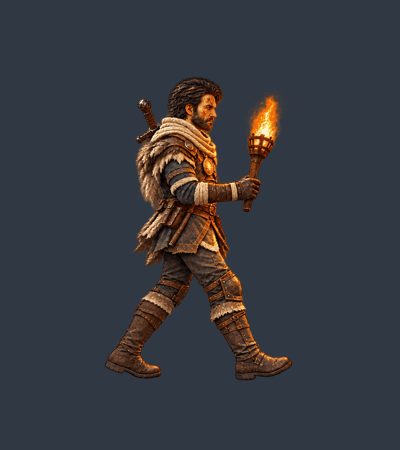
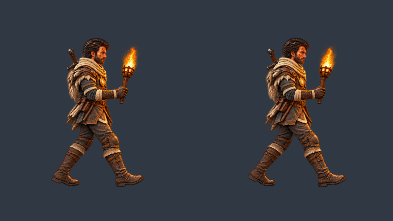
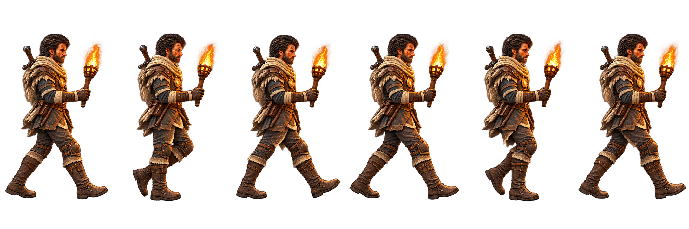
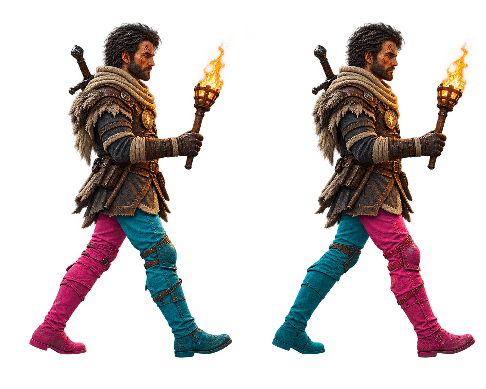
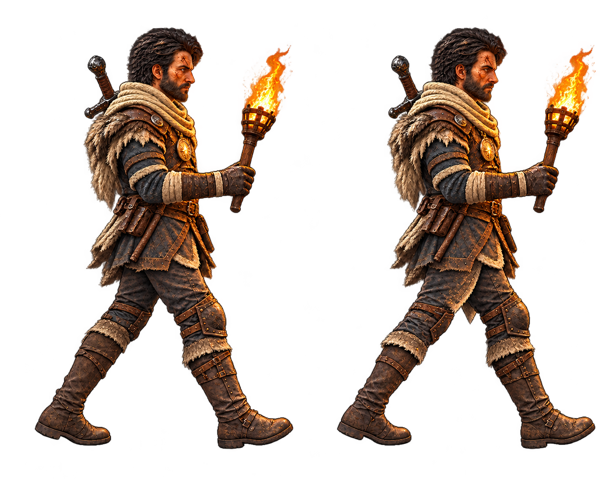
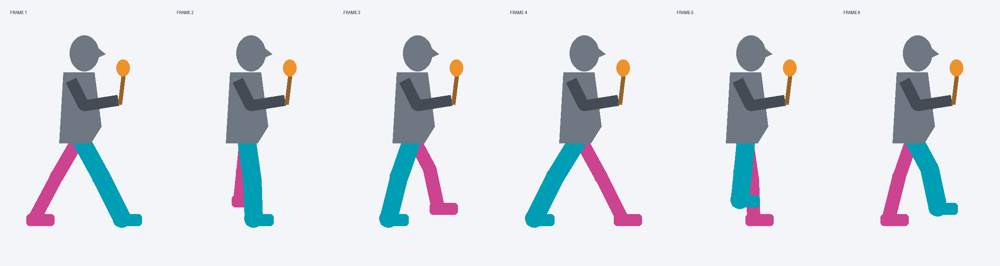

DRAFT. Guia geométrico com identificação de pernas, estudo colorido e aplicação da paleta final. Revisar alternância e continuidade. Grade, margens, câmera e escala ainda precisam de validação para integração.

Prévia usa recorte uniforme provisório. Não é exportação de runtime.




